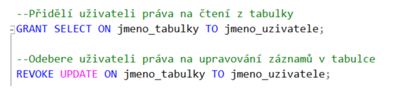
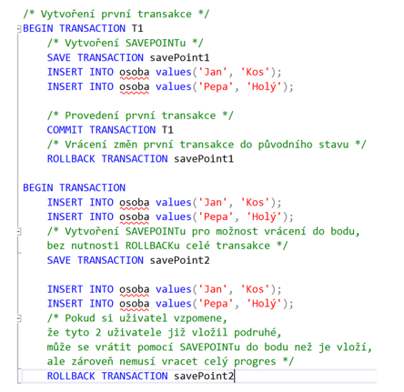

Jazyk-SQL-DCL-TCL-prikazy
Otázky
co je to DCL
GRANT
REVOKE
co je to TCL
COMMIT
SAVE
ROLLBACK
DCL
Data Control Language
soubor příkazů, které operují s uživatelskými právy
GRANT
přidává práva danému uživateli
REVOKE
odebere práva danému uživateli

TCL
Transaction Control Language
soubor příkazů, které slouží k zacházení s transakcemi
COMMIT
trvale uloží transakci do DB --> změna se uloží na trvalo
SAVEPOINT
příkaz dočasně uloží transakci, když se provede rollback, provede se k poslednímu savepointu (MySQL only ig)
ROLLBACK
vrátí DB do posledního uloženého stavu

Sum-up
DCL - soubor příkazů pro práci s oprávěními
GRANT
REVOKE
TCL - soubor příkazů pro práci s transakcí
COMMIT
SAVE
ROLLBACK
Last modified: 16 May 2024